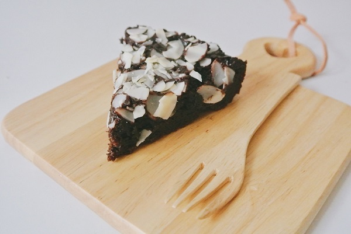>
วิธีทำบราวนี่เตาอบชิดซ้าย วิธีทำบราวนี่ไมโครเวฟชิดขวา ตอนนี้ต้องยกให้วิธีทำบราวนี่หม้อหุงข้าวมาวินเป็นที่หนึ่งในใจได้เลยค่ะ ก็แหม… สมัยนี้โลกไปไกลถึงไหนแล้ว เขามีวิธีทำบราวนี่ ที่สุดแสนจะง่าย แค่หม้อหุงข้าวใบเดียวก็ทำบราวนี่ง่าย ๆ ได้แล้วใครที่ชอบกินบราวนี่ช็อกโกแลต รสหวาน ๆ ขม ๆ เนื้อหนึบหนับ เชื่อว่าคงจะอยากลองทำเองกัน วันนี้กระปุกดอทคอมมีวิธีทำบราวนี่ด้วยหม้อหุงข้าวมาฝาก แม้แต่เครื่องตีแป้งก็ยังไม่ต้องใช้เลยด้วย เป็นสูตรจาก คุณสมาชิกหมายเลข 1561647 สมาชิกเว็บไซต์พันทิปดอทคอม รสชาติอร่อยเหมือนเดิม ได้เนื้อช็อกโกแลตเน้น ๆ และยังชิ้นใหญ่จุใจตามไซส์หม้ออีกด้วย คนที่ชอบบราวนี่ต้องลองเลยล่ะ
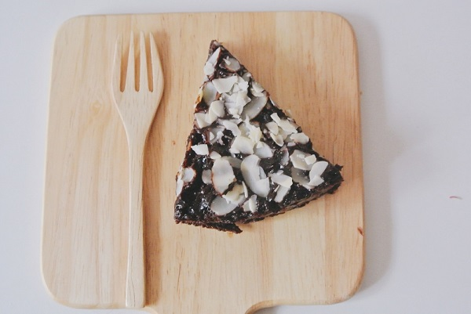
บราวนี่ เนื้อหนึบหนับ ไม่ง้อเครื่องตี ไม่มีเตาอบ มีหม้อหุงข้าวก็ฟินได้ โดย คุณสมาชิกหมายเลข 1561647 สมาชิกเว็บไซต์พันทิปดอทคอม
สวัสดีค่ะ วันนี้มาชวนทำบราวนี่เนื้อหนึบกัน ไม่มีเครื่องตีแป้ง ไม่มีเตาอบ แค่มีเพียงหม้อหุงข้าวเท่านั้น เรายังเอาดีทางด้านเค้กหม้อหุงข้าวค่ะ เพราะไม่มีเตาอบไปทำกันเลย
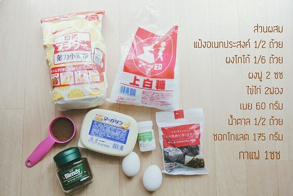
• แป้งสาลีอเนกประสงค์ 1/2 ถ้วย
• ผงโกโก้ 1/6 ถ้วย
• ผงฟู 2 ช้อนชา
• ไข่ไก่ 2 ฟอง
• เนยสด 60 กรัม
• น้ำตาลทราย 1/2 ถ้วย
• ช็อกโกแลต 175 กรัม
• กาแฟ 1 ช้อนชา
วิธีทำ
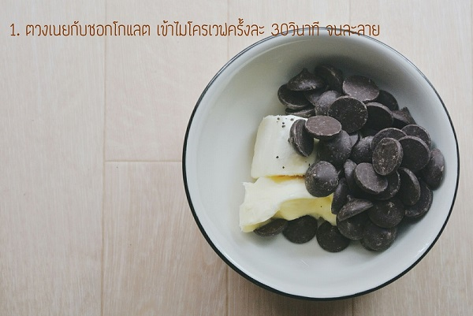
ละลายเนยสดกับช็อกโกแลตโดยใช้ไมโครเวฟกำลังไฟ 600 วัตต์ ละลายครั้งละ 30 วินาที ประมาณ 3 ครั้ง
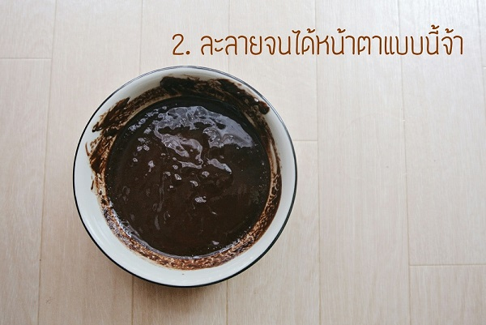
นำส่วนผสมออกจากไมโครเวฟแล้วคนจนเข้ากันเป็นเนื้อเดียว พักไว้จนเย็น

พอส่วนผสมช็อกโกแลตละลายเย็นดีแล้ว ตอกไข่ไก่ ใส่น้ำตาลทราย และผงกาแฟลงในอ่างผสม
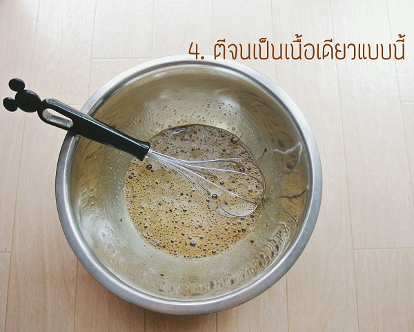
ตีจนส่วนผสมเข้ากันเป็นเนื้อเดียว
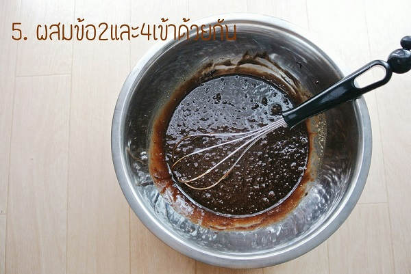
ใส่ส่วนผสมช็อกโกแลตละลายที่เย็นแล้วลงไป คนจนเข้ากันเป็นเนื้อเดียว
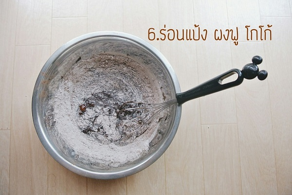
ร่อนแป้งสาลีอเนกประสงค์ ผงฟู และช็อกโกแลตลงไป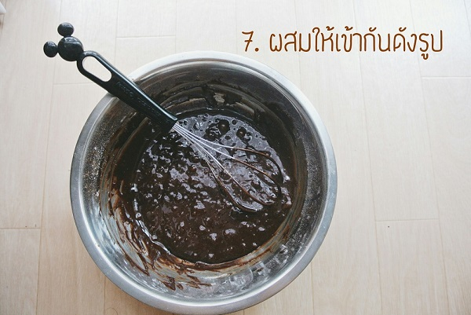
ตีจนส่วนผสมเข้ากันเป็นเนื้อเดียว

กรุกระดาษไขลงไปในหม้อหุงข้าวก่อนนะคะ ค่อย ๆ เทส่วนผสมลงไป (ตามด้วยอัลมอนด์สไลซ์) จากนั้นกดปุ่มหุงข้าวเลยค่ะ
ถ้าหม้อหุงข้าวมีโปรแกรมหุงเค้กก็กดปุ่มหุงเค้กได้เลยค่ะ ส่วนถ้าเป็นหม้อข้าวธรรมดาก็กดปุ่มหุงข้าวปกติเลย ถ้าปุ่มมันตัดก็รอให้หม้อเย็นแล้วกดปุ่มหุงใหม่ อย่าลืมกดปุ่มนะคะ ไม่เช่นนั้นเนื้อบราวนี่จะเป็นไตนะคะ
การสังเกตว่า บราวนี่สุกหรือยังให้ใช้ไม้จิ้มฟันทิ่มลงไปในเนื้อบราวนี่ ถ้าไม่มีเนื้อบราวนี่ติดไม้ขึ้นมาก็แสดงว่าสุกแล้วค่ะ
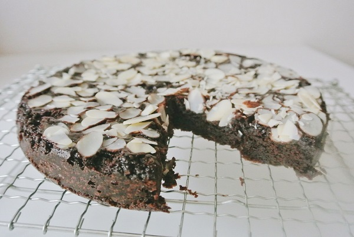
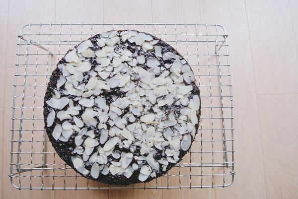
เสร็จแล้วค่ะ ไม่ยากเนอะ ลองทำกันดูนะคะ
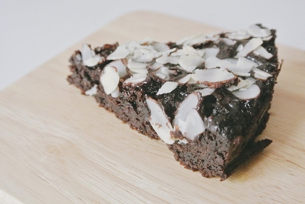
ตัดเป็นชิ้น ๆ
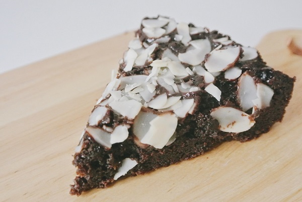
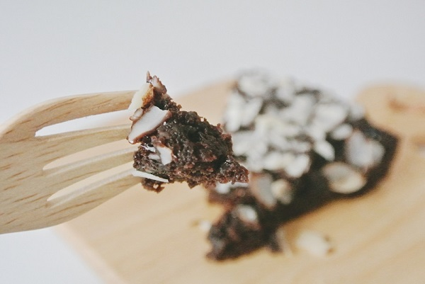
จบไปแล้วสำหรับวิธีทำบราวนี่หม้อหุงข้าว
เมื่อทำเสร็จแล้วจะได้บราวนี่หน้านิ่มช็อกโกแลตเยิ้ม โรยอัลมอนด์สไลซ์
ดูหน้าตาน่าทานจังเลยนะคะ รสชาติอร่อยไม่แพ้บราวนี่เตาอบเลยล่ะ หากเพื่อน ๆ
อยากเปลี่ยนหน้าตาบราวนี่เสียใหม่ก็ใช้วัตถุดิบอย่างอื่นโรยได้ค่ะ เช่น
มะพร้าวอบแห้ง โอรีโอ้ ช็อกโกแลต M&M เม็ดมะม่วงหิมพานต์
เมล็ดดอกทานตะวัน เป็นต้น
ถ้ารักพี่เสียดายน้องก็จัดการจับคู่เลือกโรยหน้าอย่างละครึ่งได้ด้วยค่ะ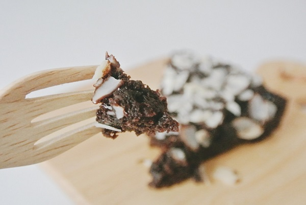
ขอขอบคุณข้อมูลและภาพประกอบจาก
คุณสมาชิกหมายเลข 1561647 สมาชิกเว็บไซต์พันทิปดอทคอม
Copyright © EAT&EAT nc. สงวนลิขสิทธิ์